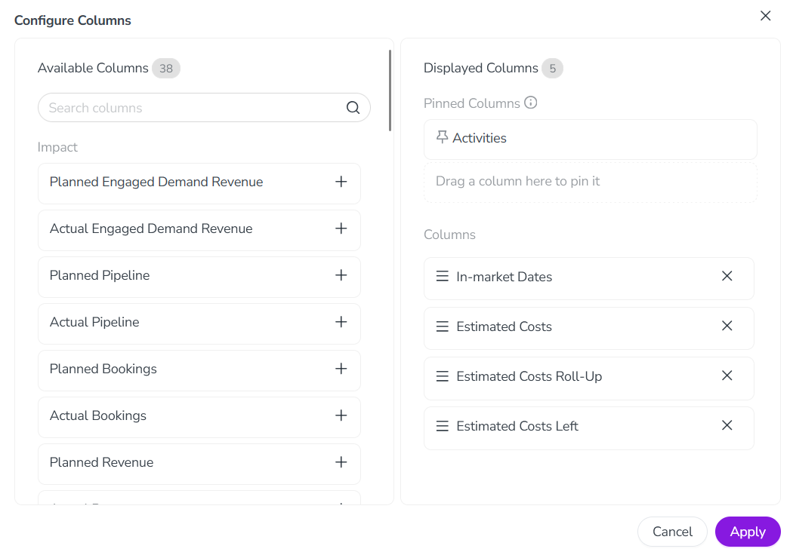

Customize Summary table columns
Because the table in the Summary display mode contains a large number of available data columns, you can customize these table columns according to your needs and preferences. You can:
Select which of the available columns are displayed in the table
Change the order of the displayed columns
Pin columns that you want to keep visible as you scroll the table horizontally
Select columns to display
By default, the table in Summary displays the following columns:
Activities
In-market Dates
Estimated Costs
Estimated Costs Roll-Up
Estimated Costs Left
In the Summary table, only the Activities column must always be displayed. For all other available columns, you can add or remove them from the table at any time to display or hide them.
Select which columns are displayed
In the
 Activities section, set the Timeline/Summary toggle to the
Activities section, set the Timeline/Summary toggle to the  Summary setting.
Summary setting.Click
 Configure Columns. The Configure Columns menu opens.
Configure Columns. The Configure Columns menu opens.To add a column to the table, find the column in the Available Columns list and click
 Add on it. The column is added to the Columns section of the Displayed Columns list.
Add on it. The column is added to the Columns section of the Displayed Columns list. 
To remove a column from the table, find the column in the Displayed Columns list and click
 Remove on it. The column is removed from the Columns section of the Displayed Columns list.
Remove on it. The column is removed from the Columns section of the Displayed Columns list.To save your changes, click Apply.
{kind=link}
The Configure Columns menu closes, and the Summary table updates to show the new column configuration.
Reorder and pin columns
You can change the order in which displayed columns are shown in the table, as well as pin columns so that they remain visible when you scroll the table horizontally.
Change column display order
In the
Activities section, set the Timeline/Summary toggle to the Summary setting.Click
Configure Columns. The Configure Columns menu opens.In the Displayed Columns list, find the column you want to reorder under the Columns section. Use the column's
 Order handle to drag it to the place in the list where you want it to be displayed.
Order handle to drag it to the place in the list where you want it to be displayed.Optional: Repeat the previous step for any other columns you want to reorder.
To save your changes, click Apply.
The Configure Columns menu closes, and the Summary table updates to show the new column configuration.
Pin a column
In the
Activities section, set the Timeline/Summary toggle to the Summary setting.Click
Configure Columns. The Configure Columns menu opens.In the Displayed Columns list, find the column you want to pin under the Columns section. Use the column's
Order handle to drag it to the Pinned Columns section.You can pin up to 3 columns (in addition to the Activity column, which is always pinned).
If you already have 3 columns pinned and drag another column to the Pinned Columns section, it will replace (unpin) the column you drop it on.
To unpin a column, drag it from the Pinned Columns section to the Columns section.
You can adjust the display order for pinned columns in the same way as for unpinned columns.
Optional: Repeat the previous step for any other columns you want to pin.
To save your changes, click Apply.
The Configure Columns menu closes, and the Summary table updates to show the new column configuration.